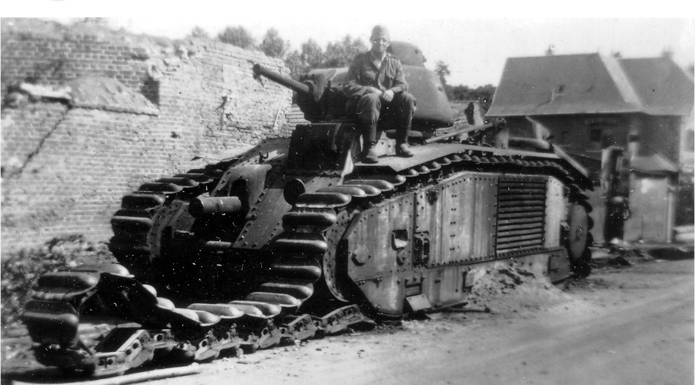
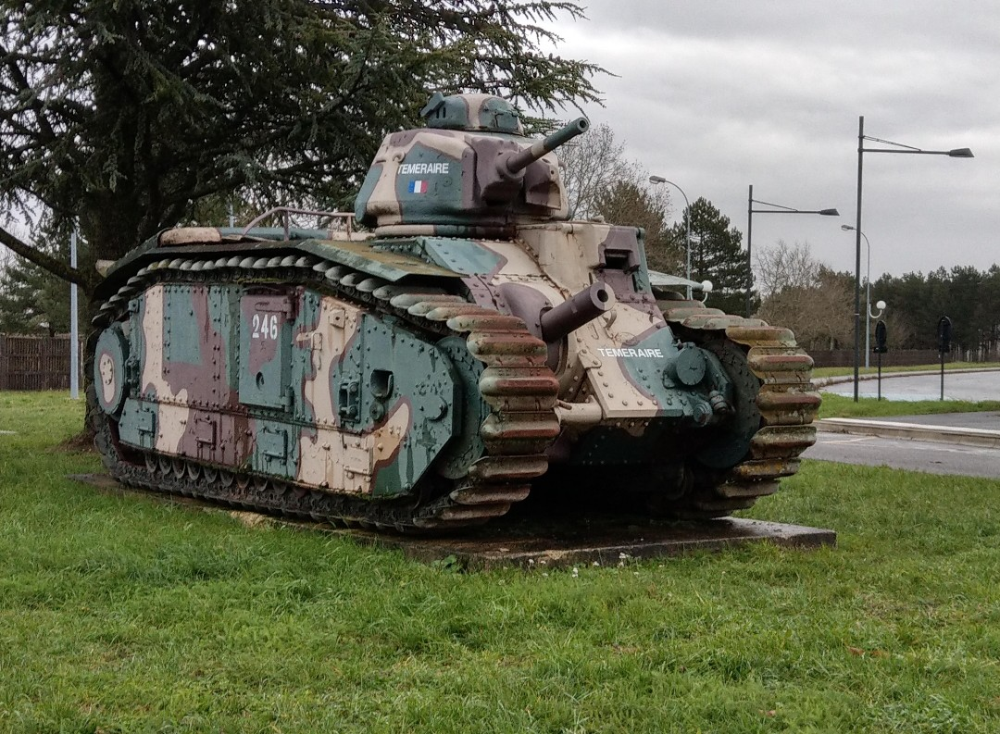
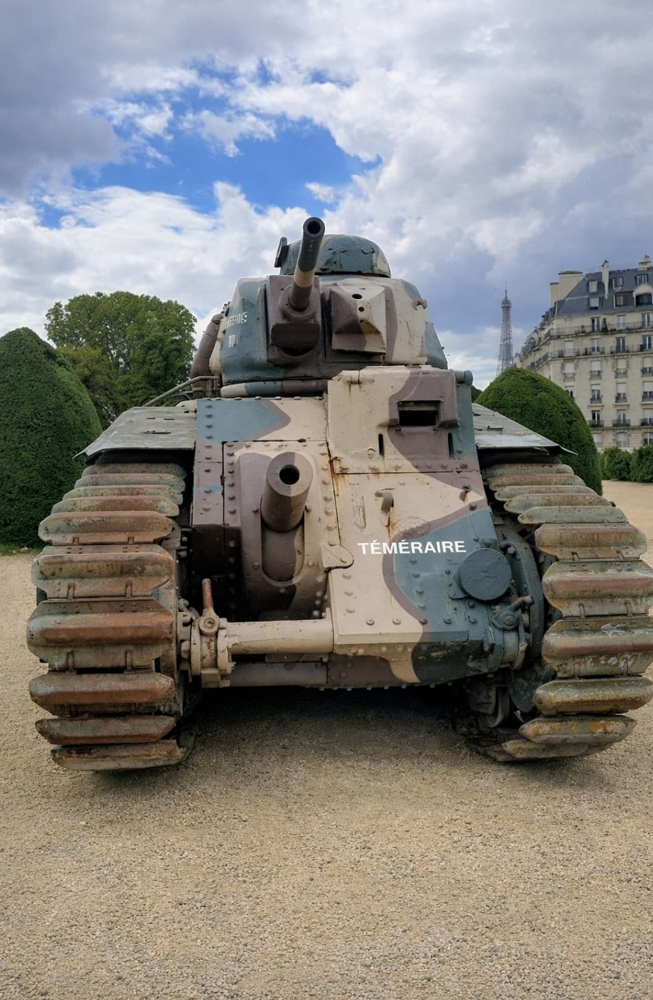

Le B1 bis est le char lourd emblématique de l’armée française en 1939–1940. Conçu pour percer les lignes ennemies, il combine un blindage exceptionnel, une puissance de feu unique et une mécanique avancée pour son époque.
Son armement principal repose sur un canon de 75 mm en casemate et un canon de 47 mm en tourelle, offrant une polyvalence rare pour un blindé de cette période.


Le B1 bis se distingue par sa silhouette massive, son blindage épais et son armement double. Sa mécanique complexe, notamment la transmission Naeder, permettait un contrôle précis du canon de 75 mm.
Malgré des performances impressionnantes, le B1 bis souffre d’une consommation élevée, d’une autonomie limitée et d’une doctrine d’emploi dépassée. Il reste néanmoins l’un des blindés les plus redoutés de la campagne de France.